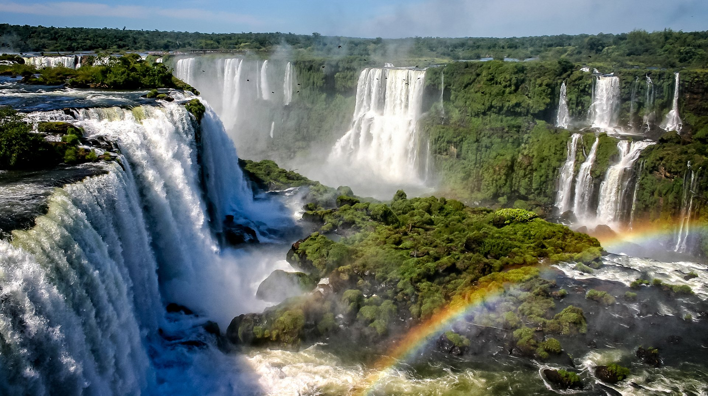

Cataratas do Iguaçu – Brasil
- As incríveis Cataratas do Iguaçu são um dos principais cartões postais tanto do Brasil como da Argentina, já que se dividem entre os dois países.
Descubra as 5 belezas naturais.
Descubra as 5 belezas urbanas.
A Mundo Sem Fronteiras é uma agência reconhecida que oferece pacotes de viagem nacionais e internacionais para todos os gostos, com guias especializados e roteiros completos. Ideal para quem quer transformar o desejo de viajar em realidade.